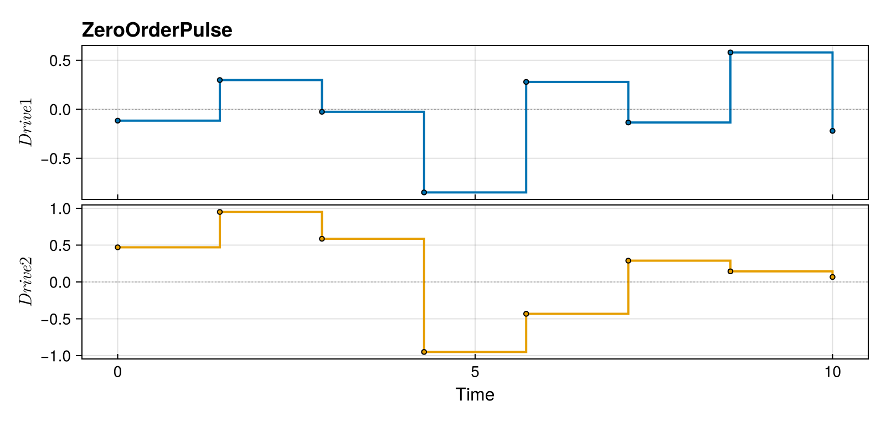
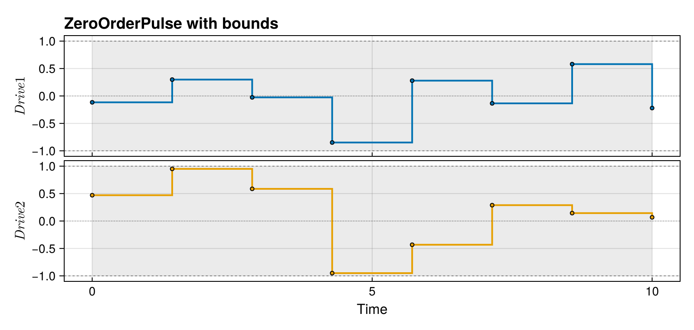
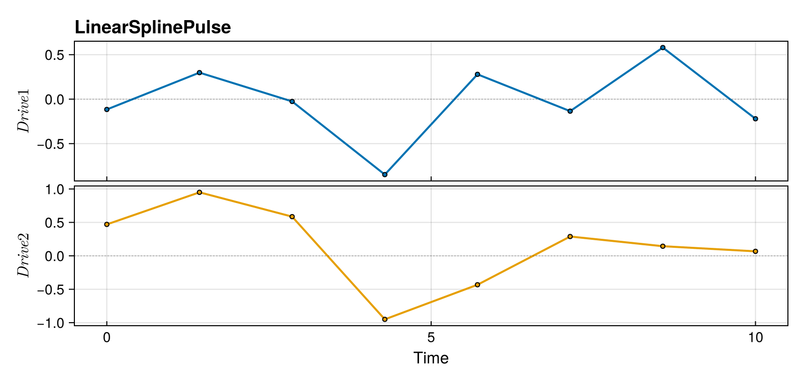
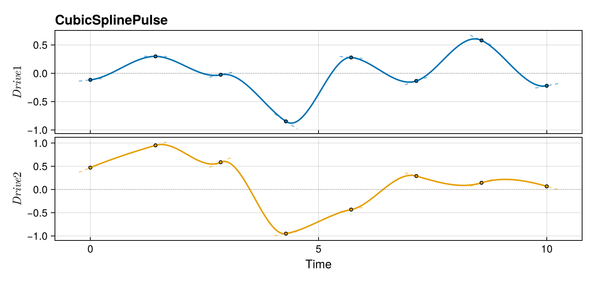
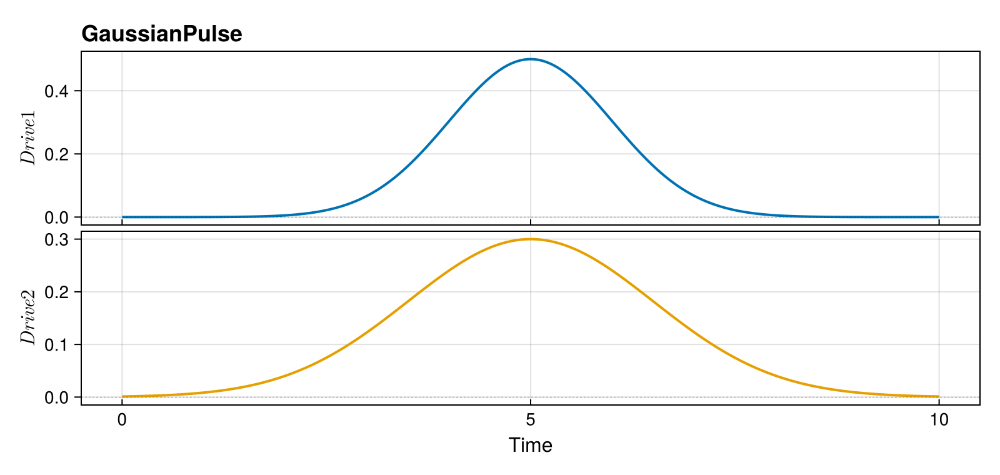
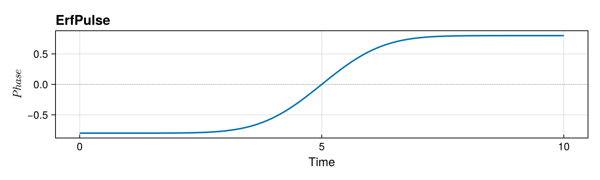
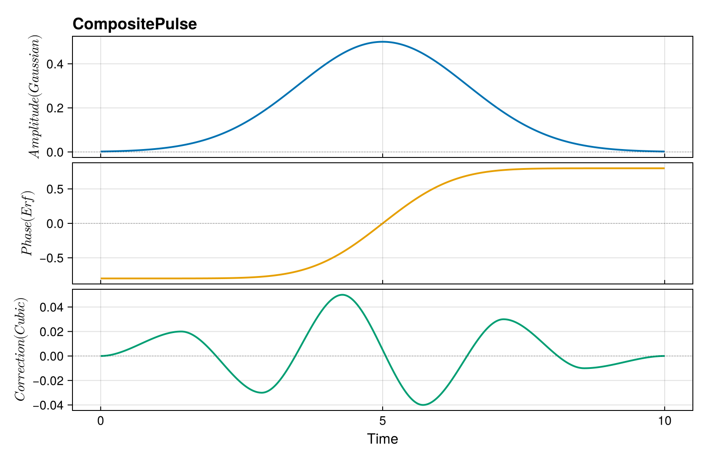
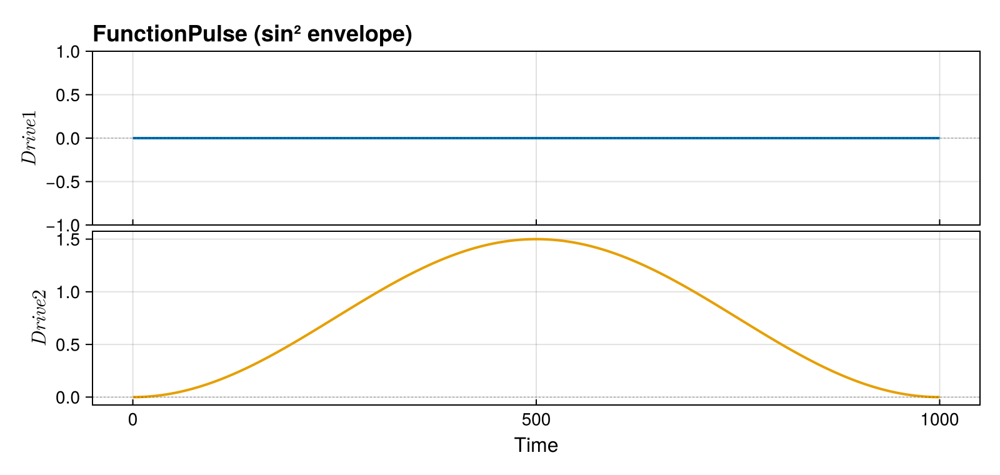
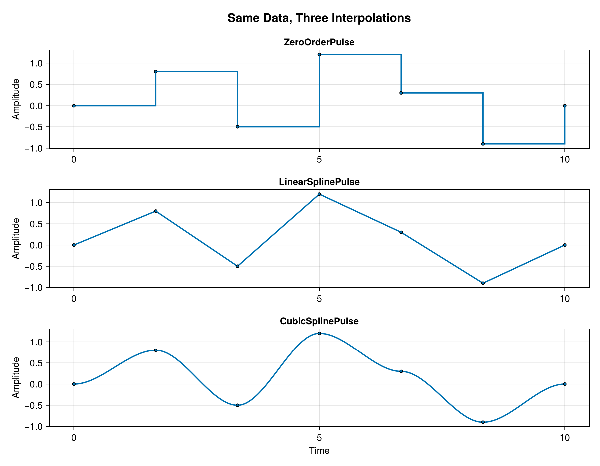
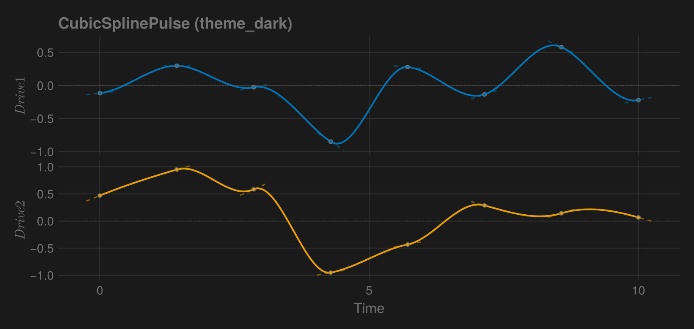

Pulses
Pulses parameterize how control amplitudes $\boldsymbol{u}(t)$ vary over time. The choice of pulse type determines both the NLP structure and the smoothness class of the resulting controls.
Overview
| Pulse Type | Continuity | Decision Variables | Use With |
|---|---|---|---|
ZeroOrderPulse | $C^{-1}$ (piecewise constant) | $\boldsymbol{u}_k$ | SmoothPulseProblem |
LinearSplinePulse | $C^0$ | $\boldsymbol{u}_k$ (knot values) | SplinePulseProblem |
CubicSplinePulse | $C^1$ | $\boldsymbol{u}_k,\, \dot{\boldsymbol{u}}_k$ (values + tangents) | SplinePulseProblem |
GaussianPulse | $C^\infty$ | $A_i, \sigma_i, \mu_i$ (parametric) | Analytical |
ErfPulse | $C^\infty$ | $A_i, \sigma_i, \mu_i$ (parametric) | Analytical / phase compensation |
CompositePulse | varies | union of sub-pulse variables | Various |
FunctionPulse | arbitrary | none (fixed function) | Rollout / fidelity evaluation |
All pulse types share the plot_pulse interface. Each is rendered with a faithful visual reflecting its actual interpolation: stairs for zero-order hold, line segments for linear splines, smooth curves with knot markers for cubic splines, and dense samples for analytic / functional pulses. plot_pulse also honors the active Makie theme — set theme_dark() once at the top of your script and every plot below picks up dark-friendly colors automatically.
ZeroOrderPulse
Piecewise constant (zero-order hold) controls — the most common choice. On the interval $[t_k, t_{k+1})$, the control is constant:
\[\boldsymbol{u}(t) = \boldsymbol{u}_k, \qquad t \in [t_k,\, t_{k+1})\]
Smoothness is enforced indirectly via regularization of the discrete differences $\Delta\boldsymbol{u}_k$ and $\Delta^2\boldsymbol{u}_k$ (see Objectives).
Construction
using Piccolo
n_dr = 2
N = 100
T = 10.0
# Time points
times = collect(range(0, T, length = N))
# Control values: n_drives × N matrix
controls = 0.1 * randn(n_dr, N)
pulse_zop = ZeroOrderPulse(controls, times)ZeroOrderPulse
drives: 2
duration: 10.0Properties
# Evaluate at time t
u = pulse_zop(T / 2)
u
# Duration
duration(pulse_zop)
# Number of drives
n_drives(pulse_zop)2Visualization
With fewer knots the step structure is clearly visible. plot_pulse uses stairs! with step = :post so each knot value is held until the next knot — the visual matches what the integrator actually sees.
N_demo = 8
demo_times = collect(range(0, T, length = N_demo))
# clamp the random initial guess inside [-1, 1] so the bounds figure below
# doesn't show stray knots crossing the hardware limit.
demo_controls = clamp.(0.5 * randn(n_dr, N_demo), -0.95, 0.95)
demo_zop = ZeroOrderPulse(demo_controls, demo_times)
plot_pulse(demo_zop; title = "ZeroOrderPulse", labels = ["Drive 1", "Drive 2"])
Adding hardware bounds shades a band on each subplot — useful when sanity- checking that an initial guess respects amplitude limits.
plot_pulse(
demo_zop;
title = "ZeroOrderPulse with bounds",
labels = ["Drive 1", "Drive 2"],
bounds = [(-1.0, 1.0), (-1.0, 1.0)],
)
Use Case
- Primary use:
SmoothPulseProblem - Characteristics: Simple structure, smoothness via derivative regularization
- Best for: Initial optimization, most quantum control problems
LinearSplinePulse
Linear interpolation between knot values. On $[t_k, t_{k+1}]$:
\[\boldsymbol{u}(t) = \boldsymbol{u}_k + \frac{t - t_k}{t_{k+1} - t_k}\,(\boldsymbol{u}_{k+1} - \boldsymbol{u}_k)\]
This gives $C^0$ continuity (continuous values, discontinuous first derivative at knots).
Construction
pulse_linear = LinearSplinePulse(controls, times)LinearSplinePulse
drives: 2
duration: 10.0Properties
- Continuous control values
- Discontinuous first derivative (at knots)
- Derivative = slope between knots
u_linear = pulse_linear(T / 2)
u_linear2-element Vector{Float64}:
-0.07771661954417675
0.19305276972078397Visualization
demo_linear = LinearSplinePulse(demo_controls, demo_times)
plot_pulse(demo_linear; title = "LinearSplinePulse", labels = ["Drive 1", "Drive 2"])
CubicSplinePulse
Cubic Hermite spline interpolation with independent tangents $\dot{\boldsymbol{u}}_k$ at each knot. The Hermite basis gives $C^1$ continuity (continuous values and first derivatives).
On $[t_k, t_{k+1}]$ with $s = (t - t_k) / (t_{k+1} - t_k) \in [0, 1]$ and $h = t_{k+1} - t_k$:
\[\boldsymbol{u}(t) = (2s^3 - 3s^2 + 1)\,\boldsymbol{u}_k + (s^3 - 2s^2 + s)\,h\,\dot{\boldsymbol{u}}_k + (-2s^3 + 3s^2)\,\boldsymbol{u}_{k+1} + (s^3 - s^2)\,h\,\dot{\boldsymbol{u}}_{k+1}\]
Both $\boldsymbol{u}_k$ and $\dot{\boldsymbol{u}}_k$ are decision variables in SplinePulseProblem.
Construction
tangents = zeros(n_dr, N) # Initial tangents (slopes)
pulse_cubic = CubicSplinePulse(controls, tangents, times)CubicSplinePulse
drives: 2
duration: 10.0Properties
- Continuous control values AND first derivatives
- Tangents are independent optimization variables
- Smooth C¹ continuous curves
u_cubic = pulse_cubic(T / 2)
u_cubic2-element Vector{Float64}:
-0.07771661954417676
0.19305276972078397Visualization
CubicSplinePulse renders as a smooth curve with knot markers. Enable show_tangents=true to see the Hermite derivative whiskers at each knot:
demo_tangents = 0.3 * randn(n_dr, N_demo)
demo_cubic = CubicSplinePulse(demo_controls, demo_tangents, demo_times)
plot_pulse(
demo_cubic;
title = "CubicSplinePulse",
labels = ["Drive 1", "Drive 2"],
show_tangents = true,
tangent_scale = 0.05,
)
GaussianPulse
Parametric Gaussian envelope:
\[u_i(t) = A_i \exp\!\left(-\frac{(t - \mu_i)^2}{2\sigma_i^2}\right)\]
Useful for analytical pulse design and warm-starting.
Construction
amplitudes = [0.5, 0.3]
sigmas = [1.0, 1.5]
centers = [5.0, 5.0]
pulse_gauss = GaussianPulse(amplitudes, sigmas, centers, T)
u_gauss = pulse_gauss(5.0)
u_gauss2-element Vector{Float64}:
0.5
0.3Visualization
Analytic pulses render as a dense smooth curve. n_samples controls the resolution — bump it up if you have very narrow features.
plot_pulse(pulse_gauss; title = "GaussianPulse", labels = ["Drive 1", "Drive 2"])
ErfPulse
Analytic error-function profile, often used for AC-Stark / phase-compensation in trapped-ion gates:
\[u_i(t) = A_i \,\mathrm{erf}\!\left(\sqrt{2}\,\frac{t - \mu_i}{\sigma_i}\right)\]
Construction
pulse_erf = ErfPulse([0.8], 2.0, T)ErfPulse
drives: 1
duration: 10.0Visualization
plot_pulse(pulse_erf; title = "ErfPulse", labels = ["Phase"])
CompositePulse
Combine multiple pulses (e.g., different drives from different sources):
amplitude_pulse = GaussianPulse([0.5], 1.5, T)
phase_pulse = ErfPulse([0.8], 2.0, T)
correction_knots = collect(range(0, T, length = 8))
correction_vals = [0.0 0.02 -0.03 0.05 -0.04 0.03 -0.01 0.0]
correction_pulse = CubicSplinePulse(correction_vals, correction_knots)
composite = CompositePulse([amplitude_pulse, phase_pulse, correction_pulse], :concatenate)
n_drives(composite)3Visualization
plot_pulse(
composite;
title = "CompositePulse",
labels = ["Amplitude (Gaussian)", "Phase (Erf)", "Correction (Cubic)"],
)
FunctionPulse
A pulse defined by an arbitrary user-supplied function $f(t) \to \boldsymbol{u}$. Unlike the other pulse types, FunctionPulse has no decision variables — it is not optimized. Its purpose is to evaluate rollouts and fidelities for analytically-defined pulse shapes (e.g. sin² envelopes, Gaussian DRAG) without discretizing them into spline knots first.
Construction
T_fp = 1000.0
pulse_fn = FunctionPulse(t -> [0.0, 1.5 * sin(π * t / T_fp)^2], T_fp, 2)
# Evaluate at any time
pulse_fn(500.0)2-element Vector{Float64}:
0.0
1.5Visualization
plot_pulse(
pulse_fn;
title = "FunctionPulse (sin² envelope)",
labels = ["Drive 1", "Drive 2"],
)
Typical Use
Compute the fidelity of an analytic pulse shape before optimizing:
sys_fp = QuantumSystem(PAULIS[:Z], [PAULIS[:X], PAULIS[:Y]], [1.0, 1.0])
ψ_init_fp = ComplexF64[1, 0]
ψ_goal_fp = ComplexF64[0, 1]
qtraj_fn = KetTrajectory(sys_fp, pulse_fn, ψ_init_fp, ψ_goal_fp)
qtraj_fn_out = rollout(qtraj_fn)
fidelity(qtraj_fn_out)2.9784980185975653e-10The result gives a baseline fidelity that can guide the choice of pulse duration or initial control amplitude before setting up an optimization problem.
Limitations
- Not usable with problem templates (
SmoothPulseProblem,SplinePulseProblem) because it carries no optimization variables. get_knot_timesreturns only[0.0, T](start and end), so ODE solvers will not add extra tstops from knots.
Choosing a Pulse Type
| Scenario | Recommended Pulse | Smoothness |
|---|---|---|
| Starting fresh | ZeroOrderPulse + SmoothPulseProblem | $C^{-1}$ (regularized) |
| Refining a solution | CubicSplinePulse + SplinePulseProblem | $C^1$ |
| Hardware requires smooth pulses | CubicSplinePulse | $C^1$ |
| Simple continuous pulses | LinearSplinePulse | $C^0$ |
| Analytical pulse design | GaussianPulse | $C^\infty$ |
| Evaluate analytic shapes (no optimization) | FunctionPulse | arbitrary |
Converting Between Pulse Types
ZeroOrderPulse → CubicSplinePulse
# Sample control values from the zero-order pulse
ctrl = hcat([pulse_zop(t) for t in times]...)
# Estimate tangents (finite differences)
tgts = similar(ctrl)
for k = 1:(N-1)
tgts[:, k] = (ctrl[:, k+1] - ctrl[:, k]) / (times[k+1] - times[k])
end
tgts[:, N] = tgts[:, N-1]
# Create cubic spline
cubic_from_zop = CubicSplinePulse(ctrl, tgts, times)
duration(cubic_from_zop)10.0Arbitrary → ZeroOrderPulse
# Sample any pulse type to create a ZeroOrderPulse
new_times = collect(range(0, T, length = 200))
new_ctrl = hcat([pulse_cubic(t) for t in new_times]...)
resampled = ZeroOrderPulse(new_ctrl, new_times)
length(new_times)200Best Practices
1. Initialize Appropriately
max_amp = 0.1 * maximum(drive_bounds)
controls = max_amp * randn(n_drives, N)2. Use Enough Time Points
# Rule of thumb: ~10 points per characteristic time scale
T = 10.0 # Total time
τ = 1.0 # Shortest feature you want to capture
N = ceil(Int, 10 * T / τ)3. Save Optimized Pulses
Pulses are the primary output of Piccolo.jl. Save them after every successful solve so you can warm-start future optimizations, share results, or deploy to hardware:
optimized_pulse = get_pulse(qcp.qtraj)
save("my_gate.jld2", optimized_pulse)See Saving and Loading Pulses for the full guide.
4. Start with ZeroOrderPulse
Even if you need smooth pulses, optimize with ZeroOrderPulse first, then convert to CubicSplinePulse for refinement.
Comparing Interpolation Types
The same control data renders differently depending on the pulse type. This is the key reason plot_pulse uses type-specific rendering:
compare_times = collect(range(0, T, length = 7))
compare_controls = [0.0 0.8 -0.5 1.2 0.3 -0.9 0.0]
fig = Figure(size = (900, 700))
ax1 = Axis(fig[1, 1]; title = "ZeroOrderPulse", ylabel = "Amplitude")
plot_pulse!(ax1, ZeroOrderPulse(compare_controls, compare_times))
ax2 = Axis(fig[2, 1]; title = "LinearSplinePulse", ylabel = "Amplitude")
plot_pulse!(ax2, LinearSplinePulse(compare_controls, compare_times))
ax3 = Axis(fig[3, 1]; title = "CubicSplinePulse", xlabel = "Time", ylabel = "Amplitude")
plot_pulse!(ax3, CubicSplinePulse(compare_controls, compare_times))
Label(
fig[0, 1],
"Same Data, Three Interpolations";
fontsize = 18,
font = :bold,
tellwidth = false,
)
fig
Theming
plot_pulse reads the active Makie theme. Calling set_theme!(theme_dark()) (or any other theme) at the top of a script makes every subsequent plot use a dark-friendly palette — line colors come from the theme's :palette[:color] cycle and knot strokes / zero-lines / hardware bounds switch to the theme's text color so they remain readable.
with_theme(theme_dark()) do
plot_pulse(
demo_cubic;
title = "CubicSplinePulse (theme_dark)",
labels = ["Drive 1", "Drive 2"],
show_tangents = true,
tangent_scale = 0.05,
)
end
See Also
- SmoothPulseProblem - Using
ZeroOrderPulse - SplinePulseProblem - Using spline pulses
- Trajectories - Combining pulses with systems
This page was generated using Literate.jl.